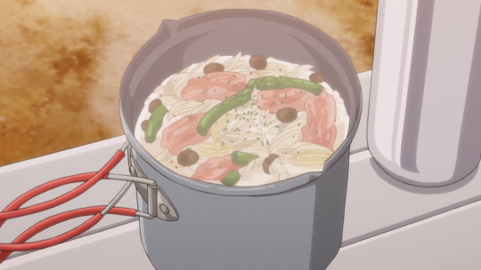

Soup Pasta

Description
Soup pasta is a delicious and simple dish from episode 5 of Laid-Back Camp.
It is Rin's first proper meal while camping.
The creamy soup can be made in a single container
so it is great for an outdoors trip or a cozy meal at home.
Ingredients
- 1 tbsp olive oil
- 2 tsp garlic paste
- 1/2 onion
- 2 thick slices of bacon
- 3 spears of asparagus
- 1/2 pack of shimeji mushrooms
- 150 ml of water
- 1 cube of consomme
- 100g of pasta
- 200ml of milk
- 2 slices of cheese
- black pepper
- parsley
Steps
- Chop the onion, bacon, asparagus, and shimeji mushrooms into bite-sized pieces
- In a pot, fry the ingredients in olive oil and garlic paste
- Mix in 150ml of water along with a cube of consomme
- Bring the water to a boil and add the pasta
- Once the pasta has soaked up most of the water in the pot,
add 200ml of milk and 2 pieces of sliced cheese
- Boil the soup pasta for a little longer
- Top with black pepper and parsley, and you're done!